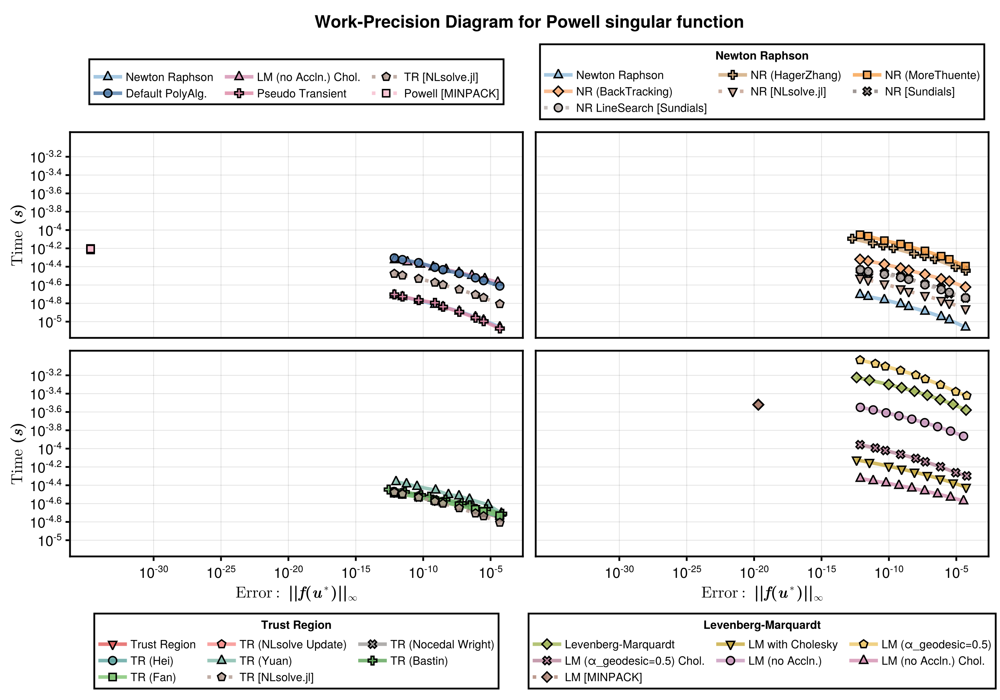
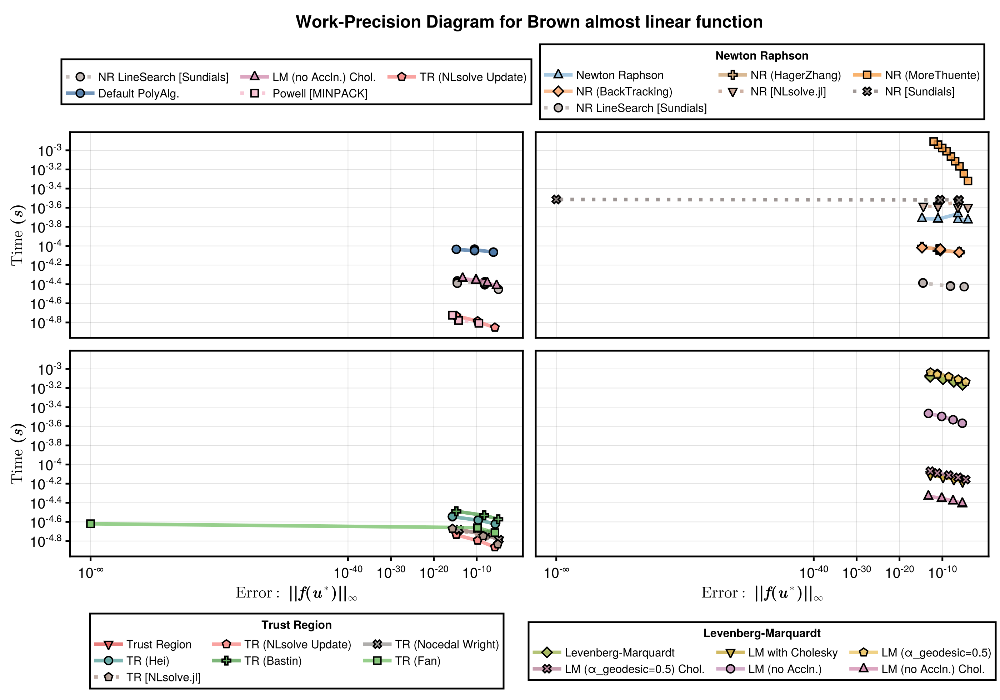
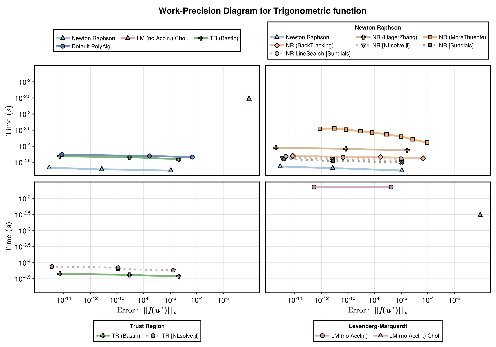
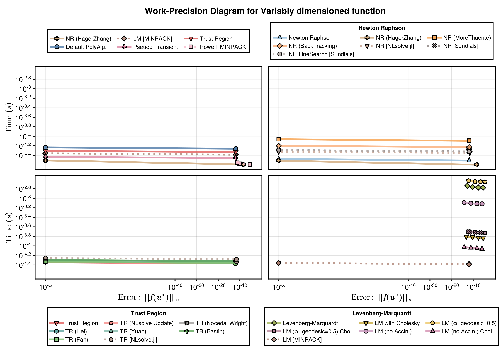
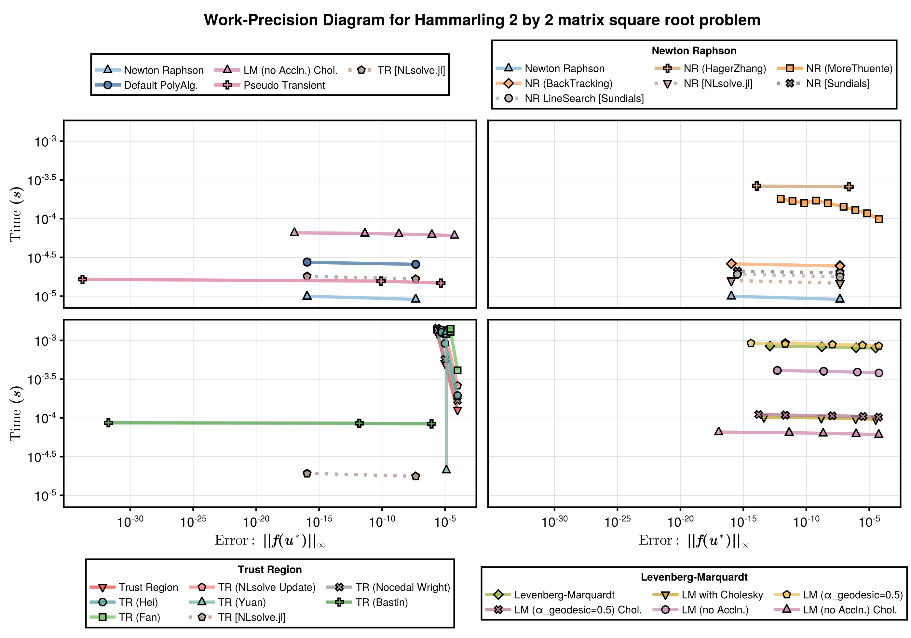
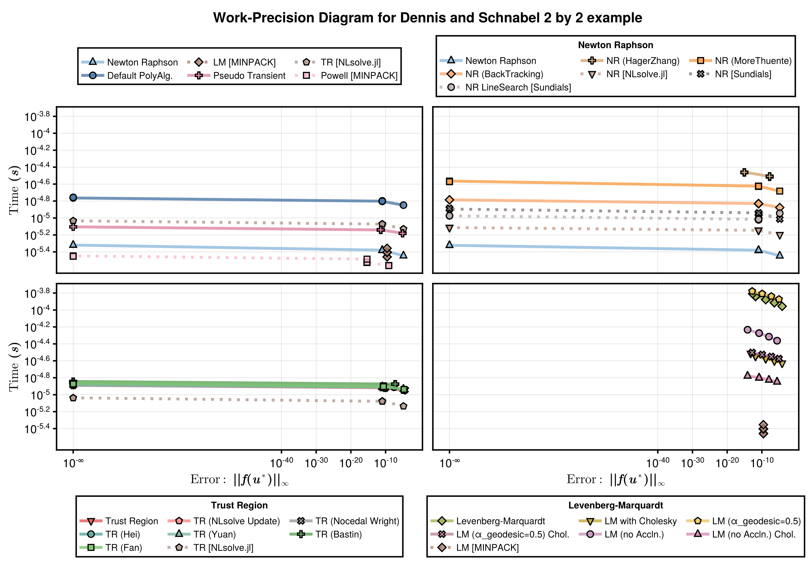
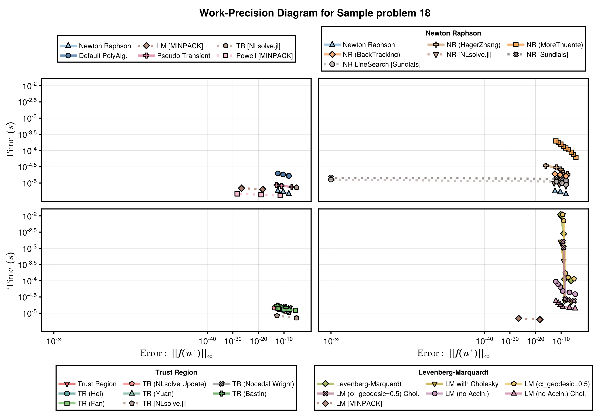
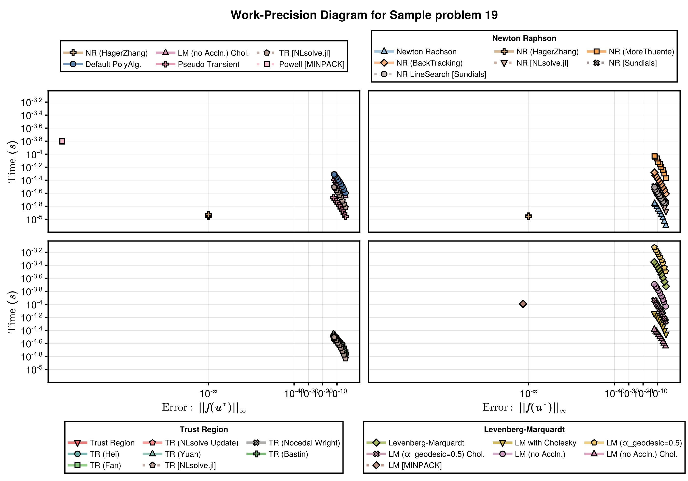

Nonlinear Solver 23 Test Problems
These benchmarks comapres the runtime and error for a range of nonlinear solvers. The problems are a standard set of problems as described here. The solvers are implemented in NonlinearProblemLibrary.jl, where you can find the problem function declarations. For each problem we test the following solvers:
- NonlinearSolve.jl's Newton Raphson method (
NewtonRaphson()). - NonlinearSolve.jl's Newton trust region method (
TrustRegion()). - NonlinearSolve.jl's Levenberg-Marquardt method (
LevenbergMarquardt()). - MINPACK's Modified Powell method (
CMINPACK(method=:hybr)). - MINPACK's Levenberg-Marquardt method (
CMINPACK(method=:lm)). - NLSolveJL's Newton trust region (
NLSolveJL()). - Sundials's Newton-Krylov method (
KINSOL()).
Setup
Fetch required packages.
using NonlinearSolve, NonlinearSolveMINPACK, SciMLNLSolve, SimpleNonlinearSolve, StaticArrays, Sundials
using BenchmarkTools, DiffEqDevTools, NonlinearProblemLibrary, PlotsDeclare the benchmakred solvers.
solvers = [ Dict(:alg=>NewtonRaphson()),
Dict(:alg=>TrustRegion()),
Dict(:alg=>LevenbergMarquardt()),
Dict(:alg=>CMINPACK(method=:hybr)),
Dict(:alg=>CMINPACK(method=:lm)),
Dict(:alg=>NLSolveJL()),
Dict(:alg=>KINSOL())]
solvernames = ["Newton Raphson";
"Newton Trust Region";
"Levenberg-Marquardt";
"Modified Powell (CMINPACK)";
"Levenberg-Marquardt (CMINPACK)";
"Newton Trust Region (NLSolveJL)";
"KINSOL (Sundials)"];Sets tolerances.
abstols = 1.0 ./ 10.0 .^ (4:12)
reltols = 1.0 ./ 10.0 .^ (4:12);Set plotting defaults.
default(framestyle=:box,legend=:topleft,gridwidth=2, guidefontsize=12, legendfontsize=9, lw=2)
colors = [1 2 3 4 5 6 7]
markershapes = [:circle :rect :heptagon :cross :xcross :utriangle :star5];Plotting formating helper function.
# Finds good x and y limits.
function xy_limits(wp)
times = vcat(map(wp -> wp.times, wp.wps)...)
errors = vcat(map(wp -> wp.errors, wp.wps)...)
xlimit = 10 .^ (floor(log10(minimum(errors))), ceil(log10(maximum(errors))))
ylimit = 10 .^ (floor(log10(minimum(times))), ceil(log10(maximum(times))))
return xlimit, ylimit
end
# Find good x and y ticks.
function arithmetic_sequences(v1, v2)
sequences = []
for n in 2:(v2-v1+1)
d = (v2 - v1) / (n - 1)
if d == floor(d)
sequence = [v1 + (j-1)*d for j in 1:n]
push!(sequences, sequence)
end
end
return sequences
end
function get_ticks(limit)
(limit[1]==-Inf) && return 10.0 .^[limit[1], limit[2]]
sequences = arithmetic_sequences(limit...)
selected_seq = findlast(length.(sequences) .< 5)
if length(sequences[selected_seq]) < 4
step = (limit[2] - limit[1]) / 6.0
ticks = [round(Int, limit[1] + i*step) for i in 1:5]
return 10 .^[limit[1];ticks;limit[2]]
end
return 10 .^sequences[selected_seq]
end
# Plots a wrok-precision diagram.
function plot_wp(wp, selected_solvers; colors=permutedims(getindex(colors,selected_solvers)[:,:]), markershapes=permutedims(getindex(markershapes,selected_solvers)[:,:]), kwargs...)
xlimit, ylimit = xy_limits(wp)
xticks = get_ticks(log10.(xlimit))
yticks = get_ticks(log10.(ylimit))
plot(wp; xlimit=xlimit, ylimit=ylimit, xticks=xticks, yticks=yticks, color=colors, markershape=markershapes, kwargs...)
end;Benchmarks
We here run benchmarks for each of the 23 models.
Problem 1 (Generalized Rosenbrock function)
For this problem, the NewtonRaphson() and KINSOL() solvers fail, and are not benchmarked.
prob_1 = nlprob_23_testcases["Generalized Rosenbrock function"]
selected_solvers_1 = [2,3,4,5,6]
wp_1 = WorkPrecisionSet(prob_1.prob, abstols, reltols, getindex(solvers,selected_solvers_1); names=getindex(solvernames,selected_solvers_1), numruns=100, appxsol=prob_1.true_sol, error_estimate=:l2)
plot_wp(wp_1, selected_solvers_1; legend=:bottomright)
Problem 2 (Powell singular function)
prob_2 = nlprob_23_testcases["Powell singular function"]
selected_solvers_2 = [1,2,3,4,5,6,7]
wp_2 = WorkPrecisionSet(prob_2.prob, abstols, reltols, getindex(solvers,selected_solvers_2); names=getindex(solvernames,selected_solvers_2), numruns=100, appxsol=prob_2.true_sol, error_estimate=:l2)
plot_wp(wp_2, selected_solvers_2)
Problem 3 (Powell badly scaled function)
prob_3 = nlprob_23_testcases["Powell badly scaled function"]
selected_solvers_3 = [1,2,3,4,5,6,7]
wp_3 = WorkPrecisionSet(prob_3.prob, abstols, reltols, getindex(solvers,selected_solvers_3); names=getindex(solvernames,selected_solvers_3), numruns=100, appxsol=prob_3.true_sol, error_estimate=:l2)
plot_wp(wp_3, selected_solvers_3)
Problem 4 (Wood function)
For this problem, the KINSOL() solver fail, and is not benchmarked.
prob_4 = nlprob_23_testcases["Wood function"]
selected_solvers_4 = [1,2,3,4,5,6]
wp_4 = WorkPrecisionSet(prob_4.prob, abstols, reltols, getindex(solvers,selected_solvers_4); names=getindex(solvernames,selected_solvers_4), numruns=100, appxsol=prob_4.true_sol, error_estimate=:l2)
plot_wp(wp_4, selected_solvers_4; legend=:topright)
Problem 5 (Helical valley function)
For this problem, the KINSOL() solver fail, and is not benchmarked.
prob_5 = nlprob_23_testcases["Helical valley function"]
selected_solvers_5 = [1,2,3,4,5,6]
wp_5 = WorkPrecisionSet(prob_5.prob, abstols, reltols, getindex(solvers,selected_solvers_5); names=getindex(solvernames,selected_solvers_5), numruns=100, appxsol=prob_5.true_sol, error_estimate=:l2)
plot_wp(wp_5, selected_solvers_5)
Problem 6 (Watson function)
For this problem, the NewtonRaphson(), TrustRegion(), LevenbergMarquardt(), and KINSOL() solvers fail, and are not benchmarked.
prob_6 = nlprob_23_testcases["Watson function"]
selected_solvers_6 = [4,5,6]
true_sol_6 = solve(prob_6.prob, NLSolveJL(); abstol=1e-18, reltol=1e-18)
wp_6 = WorkPrecisionSet(prob_6.prob, abstols, reltols, getindex(solvers,selected_solvers_6); names=getindex(solvernames,selected_solvers_6), numruns=100, appxsol=true_sol_6, error_estimate=:l2)
plot_wp(wp_6, selected_solvers_6; legend=:topright)Error: InexactError: trunc(Int64, NaN)Problem 7 (Chebyquad function)
prob_7 = nlprob_23_testcases["Chebyquad function"]
selected_solvers_7 = [1,2,3,4,5,6,7]
wp_7 = WorkPrecisionSet(prob_7.prob, abstols, reltols, getindex(solvers,selected_solvers_7); names=getindex(solvernames,selected_solvers_7), numruns=100, appxsol=prob_7.true_sol, error_estimate=:l2)
plot_wp(wp_7, selected_solvers_7; legend=:bottomright)
Problem 8 (Brown almost linear function)
For this problem, the KINSOL() solver fail, and is not benchmarked.
prob_8 = nlprob_23_testcases["Brown almost linear function"]
selected_solvers_8 = [1,2,3,4,5,6]
wp_8 = WorkPrecisionSet(prob_8.prob, abstols, reltols, getindex(solvers,selected_solvers_8); names=getindex(solvernames,selected_solvers_8), numruns=100, appxsol=prob_8.true_sol, error_estimate=:l2)
plot_wp(wp_8, selected_solvers_8)
Problem 9 (Discrete boundary value function)
prob_9 = nlprob_23_testcases["Discrete boundary value function"]
selected_solvers_9 = [1,2,3,4,5,6,7]
true_sol_9 = solve(prob_9.prob, NLSolveJL(); abstol=1e-18, reltol=1e-18)
wp_9 = WorkPrecisionSet(prob_9.prob, abstols, reltols, getindex(solvers,selected_solvers_9); names=getindex(solvernames,selected_solvers_9), numruns=100, appxsol=true_sol_9, error_estimate=:l2)
plot_wp(wp_9, selected_solvers_9)
Problem 10 (Discrete integral equation function)
prob_10 = nlprob_23_testcases["Discrete integral equation function"]
selected_solvers_10 = [1,2,3,4,5,6,7]
true_sol_10 = solve(prob_10.prob, NLSolveJL(); abstol=1e-18, reltol=1e-18)
wp_10 = WorkPrecisionSet(prob_10.prob, abstols, reltols, getindex(solvers,selected_solvers_10); names=getindex(solvernames,selected_solvers_10), numruns=100, appxsol=true_sol_10, error_estimate=:l2)
plot_wp(wp_10, selected_solvers_10; legend=:bottomleft)
Problem 11 (Trigonometric function)
For this problem, the KINSOL() solver fail, and is not benchmarked.
prob_11 = nlprob_23_testcases["Trigonometric function"]
selected_solvers_11 = [1,2,3,4,5,6]
true_sol_11 = solve(prob_11.prob, NLSolveJL(); abstol=1e-18, reltol=1e-18)
wp_11 = WorkPrecisionSet(prob_11.prob, abstols, reltols, getindex(solvers,selected_solvers_11); names=getindex(solvernames,selected_solvers_11), numruns=100, appxsol=true_sol_11, error_estimate=:l2)
plot_wp(wp_11, selected_solvers_11)
Problem 12 (Variably dimensioned function)
prob_12 = nlprob_23_testcases["Variably dimensioned function"]
selected_solvers_12 = [1,2,3,4,5,6,7]
wp_12 = WorkPrecisionSet(prob_12.prob, abstols, reltols, getindex(solvers,selected_solvers_12); names=getindex(solvernames,selected_solvers_12), numruns=100, appxsol=prob_12.true_sol, error_estimate=:l2)
plot_wp(wp_12, selected_solvers_12; legend=:bottomright)
Problem 13 (Broyden tridiagonal function)
prob_13 = nlprob_23_testcases["Broyden tridiagonal function"]
selected_solvers_13 = [1,2,3,4,5,6,7]
true_sol_13 = solve(prob_13.prob, NLSolveJL(); abstol=1e-18, reltol=1e-18)
wp_13 = WorkPrecisionSet(prob_13.prob, abstols, reltols, getindex(solvers,selected_solvers_13); names=getindex(solvernames,selected_solvers_13), numruns=100, appxsol=true_sol_13, error_estimate=:l2)
plot_wp(wp_13, selected_solvers_13; legend=:topleft, legendfontsize=6)
Problem 14 (Broyden banded function)
prob_14 = nlprob_23_testcases["Broyden banded function"]
selected_solvers_14 = [1,2,3,4,5,6,7]
true_sol_14 = solve(prob_14.prob, NLSolveJL(); abstol=1e-18, reltol=1e-18)
wp_14 = WorkPrecisionSet(prob_14.prob, abstols, reltols, getindex(solvers,selected_solvers_14); names=getindex(solvernames,selected_solvers_14), numruns=100, appxsol=true_sol_14, error_estimate=:l2)
plot_wp(wp_14, selected_solvers_14)
Problem 15 (Hammarling 2 by 2 matrix square root problem)
prob_15 = nlprob_23_testcases["Hammarling 2 by 2 matrix square root problem"]
selected_solvers_15 = [1,2,3,4,5,6,7]
wp_15 = WorkPrecisionSet(prob_15.prob, abstols, reltols, getindex(solvers,selected_solvers_15); names=getindex(solvernames,selected_solvers_15), numruns=100, appxsol=prob_15.true_sol, error_estimate=:l2)
plot_wp(wp_15, selected_solvers_15)
Problem 16 (Hammarling 3 by 3 matrix square root problem)
prob_16 = nlprob_23_testcases["Hammarling 3 by 3 matrix square root problem"]
selected_solvers_16 = [1,2,3,4,5,6,7]
wp_16 = WorkPrecisionSet(prob_16.prob, abstols, reltols, getindex(solvers,selected_solvers_16); names=getindex(solvernames,selected_solvers_16), numruns=100, appxsol=prob_16.true_sol, error_estimate=:l2)
plot_wp(wp_16, selected_solvers_16)
Problem 17 (Dennis and Schnabel 2 by 2 example)
prob_17 = nlprob_23_testcases["Dennis and Schnabel 2 by 2 example"]
selected_solvers_17 = [1,2,3,4,5,6,7]
wp_17 = WorkPrecisionSet(prob_17.prob, abstols, reltols, getindex(solvers,selected_solvers_17); names=getindex(solvernames,selected_solvers_17), numruns=100, appxsol=prob_17.true_sol, error_estimate=:l2)
plot_wp(wp_17, selected_solvers_17)
Problem 18 (Sample problem 18)
For this problem, the KINSOL() solver fail, and is not benchmarked.
prob_18 = nlprob_23_testcases["Sample problem 18"]
selected_solvers_18 = [1,2,3,4,5,6]
wp_18 = WorkPrecisionSet(prob_18.prob, abstols, reltols, getindex(solvers,selected_solvers_18); names=getindex(solvernames,selected_solvers_18), numruns=100, appxsol=prob_18.true_sol, error_estimate=:l2)
plot_wp(wp_18, selected_solvers_18)
Problem 19 (Sample problem 19)
prob_19 = nlprob_23_testcases["Sample problem 19"]
selected_solvers_19 = [1,2,3,4,5,6,7]
wp_19 = WorkPrecisionSet(prob_19.prob, abstols, reltols, getindex(solvers,selected_solvers_19); names=getindex(solvernames,selected_solvers_19), numruns=100, appxsol=prob_19.true_sol, error_estimate=:l2)
plot_wp(wp_19, selected_solvers_19)
Problem 20 (Scalar problem f(x) = x(x - 5)^2)
prob_20 = nlprob_23_testcases["Scalar problem f(x) = x(x - 5)^2"]
selected_solvers_20 = [1,2,3,4,5,6,7]
wp_20 = WorkPrecisionSet(prob_20.prob, abstols, reltols, getindex(solvers,selected_solvers_20); names=getindex(solvernames,selected_solvers_20), numruns=100, appxsol=prob_20.true_sol, error_estimate=:l2)
plot_wp(wp_20, selected_solvers_20)
Problem 21 (Freudenstein-Roth function)
For this problem, the KINSOL() solver fail, and is not benchmarked.
prob_21 = nlprob_23_testcases["Freudenstein-Roth function"]
selected_solvers_21 = [1,2,3,4,5,6]
wp_21 = WorkPrecisionSet(prob_21.prob, abstols, reltols, getindex(solvers,selected_solvers_21); names=getindex(solvernames,selected_solvers_21), numruns=100, appxsol=prob_21.true_sol, error_estimate=:l2)
plot_wp(wp_21, selected_solvers_21)
Problem 22 (Boggs function)
prob_22 = nlprob_23_testcases["Boggs function"]
selected_solvers_22 = [1,2,3,4,5,6,7]
wp_22 = WorkPrecisionSet(prob_22.prob, abstols, reltols, getindex(solvers,selected_solvers_22); names=getindex(solvernames,selected_solvers_22), numruns=100, appxsol=prob_22.true_sol, error_estimate=:l2)
plot_wp(wp_22, selected_solvers_22)
Problem 23 (Chandrasekhar function)
prob_23 = nlprob_23_testcases["Chandrasekhar function"]
selected_solvers_23 = [1,2,3,4,5,6,7]
true_sol_23 = solve(prob_23.prob, NLSolveJL(); abstol=1e-18, reltol=1e-18)
wp_23 = WorkPrecisionSet(prob_23.prob, abstols, reltols, getindex(solvers,selected_solvers_23); names=getindex(solvernames,selected_solvers_23), numruns=100, appxsol=true_sol_23, error_estimate=:l2)
plot_wp(wp_23, selected_solvers_23; legend=:topright, legendfontsize=7)
Appendix
Appendix
These benchmarks are a part of the SciMLBenchmarks.jl repository, found at: https://github.com/SciML/SciMLBenchmarks.jl. For more information on high-performance scientific machine learning, check out the SciML Open Source Software Organization https://sciml.ai.
To locally run this benchmark, do the following commands:
using SciMLBenchmarks
SciMLBenchmarks.weave_file("benchmarks/NonlinearProblem","nonlinear_solver_23_tests.jmd")Computer Information:
Julia Version 1.9.3
Commit bed2cd540a1 (2023-08-24 14:43 UTC)
Build Info:
Official https://julialang.org/ release
Platform Info:
OS: Linux (x86_64-linux-gnu)
CPU: 128 × AMD EPYC 7502 32-Core Processor
WORD_SIZE: 64
LIBM: libopenlibm
LLVM: libLLVM-14.0.6 (ORCJIT, znver2)
Threads: 128 on 128 virtual cores
Environment:
JULIA_CPU_THREADS = 128
JULIA_DEPOT_PATH = /cache/julia-buildkite-plugin/depots/5b300254-1738-4989-ae0a-f4d2d937f953
Package Information:
Status `/cache/build/exclusive-amdci3-0/julialang/scimlbenchmarks-dot-jl/benchmarks/NonlinearProblem/Project.toml`
[6e4b80f9] BenchmarkTools v1.3.2
[f3b72e0c] DiffEqDevTools v2.36.0
[b7050fa9] NonlinearProblemLibrary v0.1.0
[8913a72c] NonlinearSolve v1.10.0
[c100e077] NonlinearSolveMINPACK v0.1.3
[91a5bcdd] Plots v1.39.0
[31c91b34] SciMLBenchmarks v0.1.3
[e9a6253c] SciMLNLSolve v0.1.8
[727e6d20] SimpleNonlinearSolve v0.1.19
[90137ffa] StaticArrays v1.6.3
[c3572dad] Sundials v4.19.4
Warning The project dependencies or compat requirements have changed since the manifest was last resolved. It is recommended to `Pkg.resolve()` or consider `Pkg.update()` if necessary.And the full manifest:
Status `/cache/build/exclusive-amdci3-0/julialang/scimlbenchmarks-dot-jl/benchmarks/NonlinearProblem/Manifest.toml`
[47edcb42] ADTypes v0.2.3
[79e6a3ab] Adapt v3.6.2
[ec485272] ArnoldiMethod v0.2.0
[4fba245c] ArrayInterface v7.4.11
[30b0a656] ArrayInterfaceCore v0.1.29
[6e4b80f9] BenchmarkTools v1.3.2
[d1d4a3ce] BitFlags v0.1.7
[62783981] BitTwiddlingConvenienceFunctions v0.1.5
[fa961155] CEnum v0.4.2
[2a0fbf3d] CPUSummary v0.2.4
[49dc2e85] Calculus v0.5.1
[d360d2e6] ChainRulesCore v1.16.0
[fb6a15b2] CloseOpenIntervals v0.1.12
[944b1d66] CodecZlib v0.7.2
[35d6a980] ColorSchemes v3.23.0
[3da002f7] ColorTypes v0.11.4
[c3611d14] ColorVectorSpace v0.10.0
[5ae59095] Colors v0.12.10
[38540f10] CommonSolve v0.2.4
[bbf7d656] CommonSubexpressions v0.3.0
[34da2185] Compat v4.9.0
[f0e56b4a] ConcurrentUtilities v2.2.1
[8f4d0f93] Conda v1.9.1
[187b0558] ConstructionBase v1.5.4
[d38c429a] Contour v0.6.2
[adafc99b] CpuId v0.3.1
[9a962f9c] DataAPI v1.15.0
[864edb3b] DataStructures v0.18.15
[e2d170a0] DataValueInterfaces v1.0.0
[8bb1440f] DelimitedFiles v1.9.1
[2b5f629d] DiffEqBase v6.128.4
[f3b72e0c] DiffEqDevTools v2.36.0
[77a26b50] DiffEqNoiseProcess v5.18.0
[163ba53b] DiffResults v1.1.0
[b552c78f] DiffRules v1.15.1
⌅ [b4f34e82] Distances v0.9.2
[31c24e10] Distributions v0.25.100
[ffbed154] DocStringExtensions v0.9.3
[fa6b7ba4] DualNumbers v0.6.8
[4e289a0a] EnumX v1.0.4
[460bff9d] ExceptionUnwrapping v0.1.9
[e2ba6199] ExprTools v0.1.10
[c87230d0] FFMPEG v0.4.1
[7034ab61] FastBroadcast v0.2.6
[29a986be] FastLapackInterface v2.0.0
[1a297f60] FillArrays v1.6.1
[6a86dc24] FiniteDiff v2.21.1
[53c48c17] FixedPointNumbers v0.8.4
[59287772] Formatting v0.4.2
[f6369f11] ForwardDiff v0.10.36
[069b7b12] FunctionWrappers v1.1.3
[77dc65aa] FunctionWrappersWrappers v0.1.3
[46192b85] GPUArraysCore v0.1.5
[28b8d3ca] GR v0.72.9
[d7ba0133] Git v1.3.0
[86223c79] Graphs v1.8.0
[42e2da0e] Grisu v1.0.2
[cd3eb016] HTTP v1.9.15
[eafb193a] Highlights v0.5.2
[3e5b6fbb] HostCPUFeatures v0.1.16
[34004b35] HypergeometricFunctions v0.3.23
[7073ff75] IJulia v1.24.2
[615f187c] IfElse v0.1.1
[d25df0c9] Inflate v0.1.3
[92d709cd] IrrationalConstants v0.2.2
[82899510] IteratorInterfaceExtensions v1.0.0
[1019f520] JLFzf v0.1.5
[692b3bcd] JLLWrappers v1.5.0
[682c06a0] JSON v0.21.4
[ef3ab10e] KLU v0.4.1
[ba0b0d4f] Krylov v0.9.4
[b964fa9f] LaTeXStrings v1.3.0
[23fbe1c1] Latexify v0.16.1
[10f19ff3] LayoutPointers v0.1.14
[50d2b5c4] Lazy v0.15.1
[d3d80556] LineSearches v7.2.0
[7ed4a6bd] LinearSolve v2.5.1
[2ab3a3ac] LogExpFunctions v0.3.26
[e6f89c97] LoggingExtras v1.0.2
[bdcacae8] LoopVectorization v0.12.165
[4854310b] MINPACK v1.1.1
[1914dd2f] MacroTools v0.5.11
[d125e4d3] ManualMemory v0.1.8
[739be429] MbedTLS v1.1.7
[442fdcdd] Measures v0.3.2
[e1d29d7a] Missings v1.1.0
[46d2c3a1] MuladdMacro v0.2.4
[ffc61752] Mustache v1.0.17
[d41bc354] NLSolversBase v7.8.3
[2774e3e8] NLsolve v4.5.1
[77ba4419] NaNMath v1.0.2
[b7050fa9] NonlinearProblemLibrary v0.1.0
[8913a72c] NonlinearSolve v1.10.0
[c100e077] NonlinearSolveMINPACK v0.1.3
[6fe1bfb0] OffsetArrays v1.12.10
[4d8831e6] OpenSSL v1.4.1
[429524aa] Optim v1.7.7
[bac558e1] OrderedCollections v1.6.2
[90014a1f] PDMats v0.11.17
[65ce6f38] PackageExtensionCompat v1.0.1
[d96e819e] Parameters v0.12.3
[69de0a69] Parsers v2.7.2
[b98c9c47] Pipe v1.3.0
[ccf2f8ad] PlotThemes v3.1.0
[995b91a9] PlotUtils v1.3.5
[91a5bcdd] Plots v1.39.0
[e409e4f3] PoissonRandom v0.4.4
[f517fe37] Polyester v0.7.5
[1d0040c9] PolyesterWeave v0.2.1
[85a6dd25] PositiveFactorizations v0.2.4
[d236fae5] PreallocationTools v0.4.12
[aea7be01] PrecompileTools v1.2.0
[21216c6a] Preferences v1.4.0
[1fd47b50] QuadGK v2.8.2
[74087812] Random123 v1.6.1
[e6cf234a] RandomNumbers v1.5.3
[3cdcf5f2] RecipesBase v1.3.4
[01d81517] RecipesPipeline v0.6.12
[731186ca] RecursiveArrayTools v2.38.10
[f2c3362d] RecursiveFactorization v0.2.20
[189a3867] Reexport v1.2.2
[05181044] RelocatableFolders v1.0.0
[ae029012] Requires v1.3.0
[ae5879a3] ResettableStacks v1.1.1
[79098fc4] Rmath v0.7.1
[47965b36] RootedTrees v2.19.2
[7e49a35a] RuntimeGeneratedFunctions v0.5.12
[94e857df] SIMDTypes v0.1.0
[476501e8] SLEEFPirates v0.6.39
[0bca4576] SciMLBase v1.97.1
[31c91b34] SciMLBenchmarks v0.1.3
[e9a6253c] SciMLNLSolve v0.1.8
[c0aeaf25] SciMLOperators v0.3.6
[6c6a2e73] Scratch v1.2.0
[efcf1570] Setfield v1.1.1
[992d4aef] Showoff v1.0.3
[777ac1f9] SimpleBufferStream v1.1.0
[727e6d20] SimpleNonlinearSolve v0.1.19
[699a6c99] SimpleTraits v0.9.4
[66db9d55] SnoopPrecompile v1.0.3
[b85f4697] SoftGlobalScope v1.1.0
[a2af1166] SortingAlgorithms v1.1.1
[47a9eef4] SparseDiffTools v2.6.0
[e56a9233] Sparspak v0.3.9
[276daf66] SpecialFunctions v2.3.1
[aedffcd0] Static v0.8.8
[0d7ed370] StaticArrayInterface v1.4.1
[90137ffa] StaticArrays v1.6.3
[1e83bf80] StaticArraysCore v1.4.2
[82ae8749] StatsAPI v1.7.0
[2913bbd2] StatsBase v0.34.0
[4c63d2b9] StatsFuns v1.3.0
[7792a7ef] StrideArraysCore v0.4.17
[69024149] StringEncodings v0.3.7
[c3572dad] Sundials v4.19.4
[2efcf032] SymbolicIndexingInterface v0.2.2
[3783bdb8] TableTraits v1.0.1
[bd369af6] Tables v1.10.1
[62fd8b95] TensorCore v0.1.1
[8290d209] ThreadingUtilities v0.5.2
[3bb67fe8] TranscodingStreams v0.9.13
[d5829a12] TriangularSolve v0.1.19
[410a4b4d] Tricks v0.1.7
[781d530d] TruncatedStacktraces v1.4.0
[5c2747f8] URIs v1.5.0
[3a884ed6] UnPack v1.0.2
[1cfade01] UnicodeFun v0.4.1
[1986cc42] Unitful v1.17.0
[45397f5d] UnitfulLatexify v1.6.3
[41fe7b60] Unzip v0.2.0
[3d5dd08c] VectorizationBase v0.21.64
[81def892] VersionParsing v1.3.0
[19fa3120] VertexSafeGraphs v0.2.0
[44d3d7a6] Weave v0.10.12
[ddb6d928] YAML v0.4.9
[c2297ded] ZMQ v1.2.2
[700de1a5] ZygoteRules v0.2.3
[6e34b625] Bzip2_jll v1.0.8+0
[83423d85] Cairo_jll v1.16.1+1
[2e619515] Expat_jll v2.5.0+0
⌃ [b22a6f82] FFMPEG_jll v4.4.2+2
[a3f928ae] Fontconfig_jll v2.13.93+0
[d7e528f0] FreeType2_jll v2.13.1+0
[559328eb] FriBidi_jll v1.0.10+0
[0656b61e] GLFW_jll v3.3.8+0
[d2c73de3] GR_jll v0.72.9+1
[78b55507] Gettext_jll v0.21.0+0
[f8c6e375] Git_jll v2.36.1+2
[7746bdde] Glib_jll v2.76.5+0
[3b182d85] Graphite2_jll v1.3.14+0
[2e76f6c2] HarfBuzz_jll v2.8.1+1
[aacddb02] JpegTurbo_jll v2.1.91+0
[c1c5ebd0] LAME_jll v3.100.1+0
[88015f11] LERC_jll v3.0.0+1
[1d63c593] LLVMOpenMP_jll v15.0.4+0
[dd4b983a] LZO_jll v2.10.1+0
⌅ [e9f186c6] Libffi_jll v3.2.2+1
[d4300ac3] Libgcrypt_jll v1.8.7+0
[7e76a0d4] Libglvnd_jll v1.6.0+0
[7add5ba3] Libgpg_error_jll v1.42.0+0
[94ce4f54] Libiconv_jll v1.17.0+0
[4b2f31a3] Libmount_jll v2.35.0+0
[89763e89] Libtiff_jll v4.5.1+1
[38a345b3] Libuuid_jll v2.36.0+0
[e7412a2a] Ogg_jll v1.3.5+1
⌅ [458c3c95] OpenSSL_jll v1.1.23+0
[efe28fd5] OpenSpecFun_jll v0.5.5+0
[91d4177d] Opus_jll v1.3.2+0
[30392449] Pixman_jll v0.42.2+0
[c0090381] Qt6Base_jll v6.4.2+3
[f50d1b31] Rmath_jll v0.4.0+0
⌅ [fb77eaff] Sundials_jll v5.2.1+0
[a2964d1f] Wayland_jll v1.21.0+0
[2381bf8a] Wayland_protocols_jll v1.25.0+0
[02c8fc9c] XML2_jll v2.10.4+0
[aed1982a] XSLT_jll v1.1.34+0
[ffd25f8a] XZ_jll v5.4.4+0
[4f6342f7] Xorg_libX11_jll v1.8.6+0
[0c0b7dd1] Xorg_libXau_jll v1.0.11+0
[935fb764] Xorg_libXcursor_jll v1.2.0+4
[a3789734] Xorg_libXdmcp_jll v1.1.4+0
[1082639a] Xorg_libXext_jll v1.3.4+4
[d091e8ba] Xorg_libXfixes_jll v5.0.3+4
[a51aa0fd] Xorg_libXi_jll v1.7.10+4
[d1454406] Xorg_libXinerama_jll v1.1.4+4
[ec84b674] Xorg_libXrandr_jll v1.5.2+4
[ea2f1a96] Xorg_libXrender_jll v0.9.10+4
[14d82f49] Xorg_libpthread_stubs_jll v0.1.1+0
[c7cfdc94] Xorg_libxcb_jll v1.15.0+0
[cc61e674] Xorg_libxkbfile_jll v1.1.2+0
[12413925] Xorg_xcb_util_image_jll v0.4.0+1
[2def613f] Xorg_xcb_util_jll v0.4.0+1
[975044d2] Xorg_xcb_util_keysyms_jll v0.4.0+1
[0d47668e] Xorg_xcb_util_renderutil_jll v0.3.9+1
[c22f9ab0] Xorg_xcb_util_wm_jll v0.4.1+1
[35661453] Xorg_xkbcomp_jll v1.4.6+0
[33bec58e] Xorg_xkeyboard_config_jll v2.39.0+0
[c5fb5394] Xorg_xtrans_jll v1.5.0+0
[8f1865be] ZeroMQ_jll v4.3.4+0
[3161d3a3] Zstd_jll v1.5.5+0
⌅ [214eeab7] fzf_jll v0.29.0+0
[a4ae2306] libaom_jll v3.4.0+0
[0ac62f75] libass_jll v0.15.1+0
[f638f0a6] libfdk_aac_jll v2.0.2+0
[b53b4c65] libpng_jll v1.6.38+0
[a9144af2] libsodium_jll v1.0.20+0
[f27f6e37] libvorbis_jll v1.3.7+1
[1270edf5] x264_jll v2021.5.5+0
[dfaa095f] x265_jll v3.5.0+0
[d8fb68d0] xkbcommon_jll v1.4.1+0
[0dad84c5] ArgTools v1.1.1
[56f22d72] Artifacts
[2a0f44e3] Base64
[ade2ca70] Dates
[8ba89e20] Distributed
[f43a241f] Downloads v1.6.0
[7b1f6079] FileWatching
[9fa8497b] Future
[b77e0a4c] InteractiveUtils
[b27032c2] LibCURL v0.6.3
[76f85450] LibGit2
[8f399da3] Libdl
[37e2e46d] LinearAlgebra
[56ddb016] Logging
[d6f4376e] Markdown
[a63ad114] Mmap
[ca575930] NetworkOptions v1.2.0
[44cfe95a] Pkg v1.9.2
[de0858da] Printf
[9abbd945] Profile
[3fa0cd96] REPL
[9a3f8284] Random
[ea8e919c] SHA v0.7.0
[9e88b42a] Serialization
[1a1011a3] SharedArrays
[6462fe0b] Sockets
[2f01184e] SparseArrays
[10745b16] Statistics v1.9.0
[4607b0f0] SuiteSparse
[fa267f1f] TOML v1.0.3
[a4e569a6] Tar v1.10.0
[8dfed614] Test
[cf7118a7] UUIDs
[4ec0a83e] Unicode
[e66e0078] CompilerSupportLibraries_jll v1.0.5+0
[deac9b47] LibCURL_jll v7.84.0+0
[29816b5a] LibSSH2_jll v1.10.2+0
[c8ffd9c3] MbedTLS_jll v2.28.2+0
[14a3606d] MozillaCACerts_jll v2022.10.11
[4536629a] OpenBLAS_jll v0.3.21+4
[05823500] OpenLibm_jll v0.8.1+0
[efcefdf7] PCRE2_jll v10.42.0+0
[bea87d4a] SuiteSparse_jll v5.10.1+6
[83775a58] Zlib_jll v1.2.13+0
[8e850b90] libblastrampoline_jll v5.8.0+0
[8e850ede] nghttp2_jll v1.48.0+0
[3f19e933] p7zip_jll v17.4.0+0
Info Packages marked with ⌃ and ⌅ have new versions available, but those with ⌅ are restricted by compatibility constraints from upgrading. To see why use `status --outdated -m`
Warning The project dependencies or compat requirements have changed since the manifest was last resolved. It is recommended to `Pkg.resolve()` or consider `Pkg.update()` if necessary.